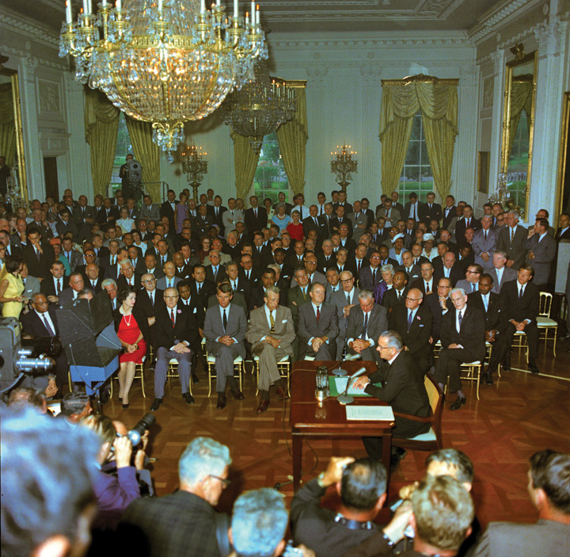

The campaign for the Democratic party’s nomination for president in 2008 culminated in a contest between a mixed-race man and a white woman. Both candidates addressed their identities directly and with pride. Barack Obama gave a notable speech about race, saying that black anger and white resentments were grounded in legitimate concerns and that Americans must work together to move beyond their racial wounds. Conceding defeat in June, Hillary Clinton told her supporters, “Although we weren’t able to shatter that highest, hardest glass ceiling this time, it’s got about eighteen million cracks in it.”
In 2008, a mixed-race man and a white woman make history as the leading contenders for the Democratic nomination for president.
Source: Photo courtesy of Nathan Forget,http://commons.wikimedia.org/wiki/File:Obama_Stump_Speech_-_cropped.jpg.
Reporters and commentators in the media identified how race and gender played out in the campaign and in the statements of the candidates and their associates, including the polarizing statements of figures such as Obama’s minister, Jeremiah Wright. At the same time, the media reported that the Democratic contest and Obama’s nomination symbolized how far civil rights have come in America from the dark days of segregation. This frame became dominant when Obama was elected president in November 2008.
Civil rightsEqual access to society and to the political process without arbitrary discrimination. protect people against discrimination. They focus on equal access to society and to political activities such as voting. They are pursued by disadvantaged groupsThose who historically have had little or no economic, social, and political power and who have been singled out for discriminatory treatment in politics and society. who, because of a single characteristic, have historically been discriminated against. In this chapter, we consider race and ethnicity, gender, sexual orientation, and disability.
The history of civil rights was created, first and most influentially, by African Americans’ struggle for racial equality. Their strategies and policy victories became the model for all other disadvantaged groups.John D. Skrentny, The Minority Rights Revolution (Cambridge, MA: Harvard University Press, 2002).
After reading this section, you should be able to answer the following questions:
Equality did not enter the Constitution until the Civil War AmendmentsThe three amendments added to the Constitution (Thirteenth, Fourteenth, and Fifteenth) after the Civil War to establish the legal status and rights of the newly freed slaves. (the Thirteenth, Fourteenth, and Fifteenth) set forth the status and rights of former slaves.
In early 1865, with the Union’s triumph in the Civil War assured, Congress passed the Thirteenth Amendment. Quickly ratified by victorious Union states, it outlawed slavery and “involuntary servitude.” It authorized Congress to pass laws enforcing the amendment—giving it the power to eradicate not simply slavery but all “badges of servitude.”Herman Belz, A New Birth of Freedom: The Republican Party and Freedmen’s Rights, 1861–1866, 2nd ed. (New York: Fordham University Press, 2000), chap. 7.
Abraham Lincoln, assassinated in 1865, was succeeded as president by Andrew Johnson, who pushed for a quick reunion of North and South. Republicans in Congress feared that the rights of newly freed slaves would be denied by a return to the old order. Distrusting Johnson, they decided protections had to be put into the Constitution. Congress enacted the Fourteenth Amendment in 1868 and made its ratification a condition for the Southern states’ reentry into the Union.
The Fourteenth Amendment contains three key clauses. First, anyone born in the United States is a US citizen, and anyone residing in a state is a citizen of that state. So it affirmed African Americans as US and state citizens.
Second, the amendment bars states from depriving anyone, whether a citizen or not, of “life, liberty, or property, without due process of law.” It thereby extended the Bill of Rights’ due process requirement on the federal government to the states.
Third, the amendment holds that a state may not “deny to any person within its jurisdiction the equal protection of the laws.” This equal protection clauseThe section of the Fourteenth Amendment to the Constitution that requires states to ensure “equal protection of the laws” to all individuals. is the Supreme Court’s major instrument for scrutinizing state regulations. It is at the heart of all civil rights. Though the clause was designed to restrict states, the Supreme Court has ruled that it applies to the federal government, too.Bolling v. Sharpe, 347 US 497 (1954). See also Adarand Constructors v. Peña, 515 US 200 (1995).
The Fifteenth Amendment, ratified in 1870, bars federal and state governments from infringing on a citizen’s right to vote “on account of race, color, or previous condition of servitude.”
The Bill of Rights limited the powers of the federal government; the Civil War Amendments expanded them. These amendments created new powers for Congress and the states to support equality. They recognized for the first time a right to vote.
Political debate and conflict surround how, where, and when civil rights protections are applied. The complex US political system provides opportunities for disadvantaged groups to claim and obtain their civil rights. At the same time, the many divisions built into the Constitution by the separation of powers and federalism can be used to frustrate the achievement of civil rights.
The status of African Americans continued to be a central issue of American politics after the Civil War.
The federal government retreated from the Civil War Amendments that protected the civil rights of African Americans. Most African Americans resided in the South, where almost all were disenfranchised and segregated by the end of the nineteenth century by Jim Crow laws that enforced segregation of public schools, accommodation, transportation, and other public places.
Jim Crow Laws
“Jim Crow” was a derogatory term for African Americans, named after “Jump Jim Crow,” a parody of their singing and dancing as performed by a white actor in blackface.
Learn more about Jim Crow laws at http://www.pbs.org/wnet/jimcrow.
Enforcing the Fifteenth Amendment’s right to vote proved difficult and costly. Blacks voted in large numbers but faced violence from whites. Vigilante executions of blacks by mobs for alleged or imagined crimes reached new highs. In 1892 alone, 161 lynchings were documented, and many more surely occurred.
In 1894, Democrats took charge of the White House and both houses of Congress for the first time since the Civil War. They repealed all federal oversight of elections and delegated enforcement to the states.William Gillette, Retreat from Reconstruction, 1869–1879 (Baton Rouge: Louisiana State University Press, 1979), chap. 2. Data on lynching are in Robert L. Zangrando, The NAACP’s Crusade Against Lynching, 1909–1950 (Philadelphia: Temple University Press, 1980), table 2. Southern states quickly restricted African American voting. They required potential voters to take a literacy test or to interpret a section of the Constitution. Whites who failed an often easier test might still qualify to vote by virtue of a “grandfather clause,” which allowed those whose grandfathers had voted before the Civil War to register.
The Supreme Court also reduced the scope of the Civil War Amendments by nullifying federal laws banning discrimination. The Court ruled that the Fourteenth Amendment did not empower the federal government to act against private persons.
De jure segregationSeparation of the races by law and public policies.—the separation of races by the law—received the Supreme Court’s blessing in the 1896 case of Plessy v. Ferguson. A Louisiana law barred whites and blacks from sitting together on trains. A Louisiana equal rights group, seeking to challenge the law, recruited a light-skinned African American, Homer Plessy, to board a train car reserved for whites. Plessy was arrested. His lawyers claimed the law denied him equal protection. By a vote of 8–1, the justices ruled against Plessy, stating that these accommodations were acceptable because they were “separate but equalThe doctrine, endorsed by the Supreme Court in Plessy v. Ferguson (1896) and repudiated by Brown v. Board of Education (1954), that racial segregation was constitutional as long as all races were treated equally..” Racial segregation did not violate equal protection, provided both races were treated equally.Plessy v. Ferguson, 163 US 537 (1896)
Plessy v. Ferguson gave states the green light to segregate on the basis of race. “Separate but equal” was far from equal in practice. Whites rarely sought access to areas reserved for blacks, which were of inferior quality. Such segregation extended to all areas of social life, including entertainment media. Films with all-black or all-white casts were shot for separate movie houses for blacks and whites.
At the dawn of the twentieth century, African Americans, segregated by race and disenfranchised by law and violence, debated how to improve their lot. One approach accepted segregation and pursued self-help, vocational education, and individual economic advancement. Its spokesman, Booker T. Washington, head of Alabama’s Tuskegee Institute, wrote the best-selling memoir Up from Slavery (1901) and worked to build institutions for African Americans, such as colleges for blacks only. Sociologist W. E. B. Du Bois replied to Washington with his book The Soul of Black Folk (1903), which argued that blacks should protest and agitate for the vote and for civil rights.
Du Bois’s writings gained the attention of white and black Northern reformers who founded the National Association for the Advancement of Colored People (NAACP) in 1909. Du Bois served as director of publicity and research, investigating inequities, generating news, and going on speaking tours.Charles Flint Kellogg, NAACP: A History of the National Association for the Advancement of Colored People, vol. 1 (Baltimore: Johns Hopkins University Press, 1967).
The NAACP brought test cases to court that challenged segregationist practices. Its greatest successes came starting in the 1930s, in a legal strategy led by Thurgood Marshall, who would later be appointed to the Supreme Court. Marshall urged the courts to nullify programs that provided substandard facilities for blacks on the grounds that they were a violation of “separate but equal.” In a key 1937 victory, the Supreme Court ruled that, by providing a state law school for whites without doing the same for blacks, Missouri was denying equal protection.Missouri ex rel. Gaines v. Canada, 305 US 676 (1937). See Mark V. Tushnet, The NAACP’s Legal Strategy Against Segregated Education, 1925–1950 (Chapel Hill: University of North Carolina Press, 1987), chaps. 2–5. Such triumphs did not threaten segregation but made Southern states take “separate but equal” more seriously, sometimes forcing them to give funds for black colleges, which became centers for political action.Doug McAdam, Political Process and the Development of Black Insurgency, 1930–1970, 2nd ed. (Chicago: University of Chicago Press, 1999), 100–103.
During World War I, Northern factories recruited rural Southern black men for work, starting a “Great Migration” northward that peaked in the 1960s. In Northern cities, African Americans voted freely, had fewer restrictions on their civil rights, organized themselves effectively, and participated in politics. They began to elect black members of Congress, and built prosperous black newspapers. When the United States entered World War II, many African Americans were brought into the defense industries and the armed forces. Black soldiers who returned from fighting for their country engaged in more militant politics.
President Harry S. Truman saw black citizens as a sizable voting bloc. In 1946, he named an advisory commission to recommend civil rights policies. Amid his 1948 election campaign, Truman issued executive orders that adopted two of its suggestions: desegregating the armed forces and creating review boards in each cabinet department to monitor discrimination. With the crucial help of Northern black votes, Truman won in an upset.
In the 1940s, Supreme Court decisions on lawsuits brought by the NAACP and argued by Thurgood Marshall chipped away at “separate but equal.” In 1941, Arthur Mitchell, a black member of Congress from Chicago, was kicked out of a first-class sleeping car when his train entered Arkansas. The Court ruled that the Arkansas law enforcing segregation was unconstitutional. In 1944, the Court ruled that the Fifteenth Amendment barred Texas from running an all-white primary election. In 1948, it stopped enforcement of covenants that home buyers signed that said they would not resell their houses to blacks or Jews.Mitchell v. United States, 313 US 80 (1941); Smith v. Allwright, 321 US 649 (1944); Shelley v. Kraemer, 334 US 1 (1948).
Marshall decided to force the justices to address the issue of segregation directly. He brought suit against school facilities for blacks that were physically equal to those for whites. With the 1954 decision, Brown v. Board of Education, the Supreme Court overturned Plessy v. Ferguson and ruled unanimously that racial segregation in public education violated the Constitution.Brown v. Board of Education, 347 US 483 (1954). (See Note 15.23 "Comparing Content" in Chapter 15 "The Courts".)
Only 6 percent of Southern schools had begun to desegregate by the end of the 1950s. In 1957, Arkansas Governor Orval Faubus, backed by white mobs, mobilized the National Guard to fight a federal court order to desegregate Little Rock’s public schools. President Eisenhower took charge of the Arkansas National Guard and called up US troops to enforce the order.Harvard Sitkoff, The Struggle for Black Equality, 1954–1992, rev. ed. (New York: Hill and Wang, 1993), chap. 2. Television images of the nine Little Rock students attempting to enter Central High surrounded by troops and an angry mob brought the struggle for civil rights into American living rooms.
Central High Conflicts
Learn more about the conflicts at Central High online at http://www.nps.gov/nr/travel/civilrights/ak1.htm.
Even before the Brown v. Board of Education decision, a mass movement of African Americans had emerged from black churches and black colleges. Such organizations provided networks for communicating with and organizing recruits. The black press in both the North and the South publicized the movement.
Daily newspapers in the South, which covered a white power structure and were aimed at white readers, all but ignored the African American civil rights movement. Southern reporters who covered the movement were threatened, and even harmed physically, by the Ku Klux Klan, a white supremacist group.Gene Roberts and Hank Klibanoff, The Race Beat. (New York: Random House, 2006). Northern newspapers were slow to discover the movement, although the attention they eventually accorded civil rights protests would help the movement grow and expand.
The first mass action for civil rights took place in Baton Rouge, Louisiana, in 1953. African Americans led by a Baptist minister boycotted the city’s segregated public buses. Although African Americans provided about three-quarters of the ridership, they had to stand behind an often near-empty white section. A deal was struck: the city council saved the first two rows for whites but blacks could sit anywhere else, as long as they were not in front of whites.
Figure 5.1

NAACP leaders sued the city and started a boycott led by a twenty-six-year-old Baptist preacher fresh out of divinity school—Martin Luther King Jr. The boycott lasted 381 days and ended only after the US Supreme Court had declared Montgomery’s segregated public transportation unconstitutional.
Another bus boycott took place in Montgomery, Alabama. Rosa Parks, a seamstress and an activist in the local NAACP, was arrested in December 1955 after refusing to give up her bus seat to a white man.
Rosa Parks
Two enduring images of the African American civil rights movement are of Rosa Parks. In one, she is being arrested. In a later photograph taken for Look magazine, she is sitting on a city bus in front of a white passenger. Her refusal to give up her bus seat to a white person and move to the back of the bus touched off the massive Montgomery bus boycott that ended with a Supreme Court decision ordering the city to desegregate public transportation. The images endure because of the simple, moving tale of a lone individual affirming her dignity and equality by a simple act—sitting down.
What the images do not show is that Parks was a longstanding activist in local civil rights politics and was secretary of the Montgomery chapter of the NAACP. The photo of her arrest was not for her action on the bus, but for later activity in the boycott.
Parks was not the first African American woman to refuse to give up her seat in a bus. Claudette Colvin, a fifteen-year-old young woman active in the NAACP Youth Council, had refused to give up her bus seat a few months before. Colvin cried out as she was arrested, “this is my constitutional right.” NAACP leaders had hoped to draw attention to Colvin’s case, until they realized that she was foul-mouthed and unruly—the pregnant, unmarried Colvin was not the symbol of African American resistance the NAACP wished to portray. Parks, a diminutive, devout, soft-spoken, married woman, was ideal for favorable publicity.Douglas Brinkley, Rosa Parks (New York: Viking Penguin, 2000), chap. 5.
Civil rights activists receive most positive coverage when they are able to present themselves as noble, oppressed victims. The images of Parks, arrested and sitting at the front of the bus, have lasted and been widely reproduced. Other images of Parks as political activist and organizer, roles that are equally central to her life, have not.
King founded the Southern Christian Leadership Conference (SCLC) to lead black resistance, confirmed himself as the leading orator of the movement, and honed a strategy by which black victims of discrimination confronted repressive white power nonviolently. Rosa Parks’s example revealed how this “David-and-Goliath” story was well suited to getting the issue of civil rights into the news.
Students created the next wave of activism. In 1960, four freshmen at North Carolina A&T State University sat down at a dime-store, whites-only lunch counter in Greensboro and would not leave until they were served.
The students tipped off a local white photographer, who took a picture of them that gained national attention. The “Greensboro four” were arrested and jailed. Twenty-nine students sat at the lunch counter the next day, and hundreds more followed. After months of dwindling sales, Greensboro’s merchants agreed to desegregate. The sit-in was rapidly imitated across the South.William H. Chafe, Civilities and Civil Rights: Greensboro, North Carolina, and the Black Struggle for Freedom (New York: Oxford University Press, 1980), chap. 3. It inspired a new, younger, more confrontational organization—the Student Nonviolent Coordinating Committee (SNCC).
In 1961, white and black activists launched a Freedom Ride to travel together on buses from Washington, DC, to New Orleans in defiance of state laws. They did not make it. In Alabama, one bus was stopped, and its occupants were badly beaten. Another bus was set on fire, and the freedom riders barely escaped alive.
Dramatic, widely distributed photographs of these events forced President John F. Kennedy to order federal agencies to halt segregation and discrimination in interstate transportation.David Niven, The Politics of Injustice: The Kennedys, the Freedom Rides, and the Electoral Consequences of a Moral Compromise (Knoxville: University of Tennessee Press, 2003). Civil rights activists used depictions of white repression to win dramatic news coverage and generate public sympathy for their cause.
The SNCC organized the Freedom Summer of 1964, a campaign to register voters in Mississippi, the state with the largest percentage of blacks and the lowest rate of black voter registration. Massive resistance from whites resulted in violence, culminating in the murder of three civil rights workers—one black and two white. Murders of white civil rights activists generated more public outrage and received more news coverage than murders of black participants.
In 1963, King and the SCLC conducted an all-out campaign, including mass meetings, sit-ins, and boycotts of downtown stores in Birmingham, Alabama. Their attempts to march to city hall were violently suppressed by police. Marchers, including young children, were chased and attacked by police dogs and pummeled with water from fire hoses so powerful it tore off their clothes and removed bark from trees. Thousands were arrested.
These protests, and the official response, received saturation coverage in the news. After five weeks, Birmingham’s business leaders signed an agreement to desegregate stores and enhance black employment.Glenn T. Eskew, But For Birmingham: The Local and National Movements in the Civil Rights Struggle (Chapel Hill: University of North Carolina Press, 1997). In a nationally televised address in June, President Kennedy proposed a far-reaching Civil Rights Act. Riding a surge of attention, King planned a national march on Washington. A quarter of a million people jammed around the Lincoln Memorial in August to hear speeches and songs, capped off by King’s “I Have a Dream” vision of racial reconciliation.
Dr. Martin Luther King’s “I Have a Dream” Speech
Listen to King’s “I Have a Dream” speech online at http://mlk-kpp01.stanford.edu/index.php/encyclopedia/documentsentry/doc_august_28_1963_i_have_a_dream.
After the assassination of President Kennedy in November 1963, the new president, Lyndon B. Johnson, asked Congress to pass the Civil Rights Act, which Kennedy had initiated. It became law after weeks of lobbying, concessions, deals, and filibusters by Southern senators.
Figure 5.2
Landmark civil rights legislation was signed into law by a son of the Old South, Texan Lyndon B. Johnson, who pointedly invited the civil rights leader Martin Luther King Jr. to the White House for the ceremony.
The Civil Rights Act forbids discrimination on the basis of “race, color, religion, or national origin” in public accommodations and employment. It set up the Equal Employment Opportunity Commission (EEOC) to implement the law.
With the passage of the Civil Rights Act, the movement turned from discrimination to the vote. Southern blacks trying to register to vote were required to answer impossible questions, such as “how many bubbles in a bar of soap?” Those who managed to register and then tried to vote might be beaten or fired from their jobs. King and the SCLC marched on Selma, Alabama, to peacefully push the goal of registering black citizens to vote. Such a simple message was ideal for transmission through the national news.
In March of 1965, King organized a march from Selma to the state capital, Montgomery. A column of six hundred marchers were confronted by fifty Alabama state troopers, some on horseback, and ordered to disperse. When they did not move, the troopers charged them and shot tear gas, brutally injuring one hundred of the demonstrators. Television footage of this “Bloody Sunday” was widely broadcast.
The upsurge in news coverage prompted membership and funding for civil rights organizations to soar. Public opinion polls revealed that civil rights was the nation’s most important problem.Tom W. Smith, “America’s Most Important Problem—A Trend Analysis, Public Opinion Quarterly 44, no. 2 (Summer 1980): 164–80. Officials felt pressure to act. President Johnson gave a televised speech before Congress to propose the Voting Rights Act, stating, “It is all of us who must overcome the crippling legacy of bigotry and injustice.” He paused, then evoked the civil rights battle cry: “We shall overcome.” The act sailed through Congress. (See Johnson speak at http://millercenter.org/scripps/archive/speeches/detail/3386.)
The Voting Rights Act of 1965 gave new powers to the federal government. The act outlawed literacy tests and required the states to prove to the justice department that any changes in voting practices would not abridge the right to vote. It authorized the federal government to use poll watchers and registration examiners to supervise state and local elections. It instantly removed barriers to black registration and voting. In Mississippi, the percentage of blacks registered to vote swelled from under 7 percent in 1964 to 60 percent in 1967.
Victorious in the South, the African American civil rights movement turned north. Blacks and whites were separated by locality and attended different schools in both North and South. Separation of the races in the North was by practice more than by law; such de facto segregationSeparation of the races that occurs by social practice. proved tougher to address by legal efforts alone.
African Americans began rioting in Northern cities, and the rioting reached a peak in 1967. Many rioters saw their actions as protest or rebellion. Some of their violence targeted white-owned stores, which they looted, and police stations, which they set on fire. Scores of African Americans died after police and soldiers were brought in to restore order.
In part due to their perennial interest in vivid, dramatic conflict, the media shifted their focus from nobly suffering victims to fiery, demanding militants. The unity, discipline, and influence of the African American civil rights movement ebbed. King’s doctrine of nonviolent resistance was challenged by the rhetoric of the Black Muslim leader Malcolm X who advocated “any means necessary” to advance equality and promoted SNCC’s new motto, “Black Power.” In 1968, King was assassinated in Memphis, where he had gone to support the sanitation workers’ campaign for improved pay and working conditions.
Black militancy, amplified in the news, spawned a white backlash. Republican Richard Nixon was elected president in 1968 on a “law and order” platform that called for slowing down desegregation. The news prominently displayed the dramatic, sometimes violent, reaction by whites against the busing of black students to white schools in supposedly liberal Northern cities such as Boston. It did not miss the irony of massive demonstrations against the busing to desegregate the public schools of Boston, the city at the center of the opposition to slavery prior to the Civil War.
In 1974, the Supreme Court rejected a Detroit plan that required busing across school district lines. The judicial push for integration slowed.J. Harvie Wilkinson III, From Brown to Bakke: The Supreme Court and School Desegregation (New York: Oxford University Press, 1979), chaps. 8–9.
In recent years, the main mass-media focus on African American civil rights has been affirmative actionEfforts made or enforced by government to increase percentages of racial and ethnic minorities, and women, in higher education and the workplace.: efforts made or enforced by government to achieve equality of opportunity by increasing the percentages of racial and ethnic minorities and women in higher education and the workplace.
Most members of racial and ethnic minorities support affirmative action; majorities of whites are opposed. Supporters tend to focus on remedying the effects of past discrimination; opponents respond that government should never discriminate on the basis of race. The media largely frame the issue as a question of one side winning and the other side losing.Robert M. Entman and Andrew Rojecki, The Black Image in the White Mind: Media and Race in America (Chicago: University of Chicago Press, 2000).
The Supreme Court first weighed in on affirmative action in 1978. Allan Bakke, a white applicant, was denied entrance to the medical school of the University of California, Davis. Bakke noted that his test scores were higher than other applicants admitted on a separate track for minorities. He sued, charging “reverse discrimination.” The Court concluded that UC Davis’s approach of separating white and minority applicants into two separate groups violated the principle of equal protection. School programs like Harvard’s, which considered race as one of many criteria, were permissible.Regents of the University of California v. Bakke, 438 US 265 (1978).
A 2003 Supreme Court decision affirmed this position by voiding the undergraduate admission program at the University of Michigan that added points to a candidate’s application on the basis of race but upholding the graduate admission approach that considered race in a less quantitative way.
In 2007, the Supreme Court rejected the actions of the Seattle and Louisville school systems to promote racial integration by assigning students to particular schools in order to make the population of each school reflect the cities’ racial composition. This 5–4 decision by Chief Justice Roberts, leading the Court’s conservative majority, seemed to prohibit school systems from using race to classify and thus assign students. It did, however, allow the use of other (unspecified) race-conscious measures to combat racial segregation.Parents Involved in Community Schools v. Seattle School District No. 1, 551 US 701 (2007).
The legacy of slavery and segregation is evident in not only the higher rates of poverty, unemployment, and incarceration but also the lower life expectancy and educational test scores of African Americans compared to whites. Visitors to the website of the NAACP will find many subjects connected to race, such as police practices of racial profiling of suspects. But the NAACP also deals with issues that disproportionately affect African Americans and that some might think have “nothing to do with race.” These include a practice the NAACP labels “environmental racism,” whereby polluting factories are placed next to poor, largely African American neighborhoods.
The mass media tend to focus on incidents of overt discrimination rather than on damage caused by the poverty, poor education, and environmental hazards that disadvantaged groups often face. This media frame explains why television reporters, facing the devastation of New Orleans by Hurricane Katrina, were so thunderstruck by the overwhelming number of black faces among the victims. The topic of black urban poverty is simply not something the press routinely covers.
Civil rights protect people against discrimination and focus on equal access to society and political life. In this section we have described the evolution and contents of the civil rights of African Americans. We started with the Civil War Amendments added to the Constitution to guarantee newly freed slaves’ legal status. We covered African Americans’ disenfranchisement and segregation, their mobilizing against segregation, the end of de jure segregation, and the civil rights movement. We described the 1964 Civil Rights Act and 1965 Voting Rights Act, and the issue of affirmative action. African Americans have had more success in combating segregation by law than fighting discrimination by practice. They have variously been helped and hindered by media coverage and depictions of their situation and struggles. Civil rights issues persist today.
After reading this section, you should be able to answer the following questions:
Policies protecting African Americans’ civil rights automatically extend to other racial and ethnic minorities. Most prominent of these groups are Latinos, Asian Americans, and Native Americans. They all have civil rights concerns of their own.
Latinos have displaced African Americans as the largest minority group in the United States. They are disproportionately foreign-born, young, and poor. They can keep in touch with issues and their community through a burgeoning Spanish-language media. Daily newspapers and national television networks, such as Univisión, provide a mix of news and advocacy.
Politicians court Latinos as a growing bloc of voters.Benjamin Márquez, LULAC: The Evolution of a Mexican American Political Organization (Austin: University of Texas Press, 1993); David Rodríguez, Latino National Political Coalitions: Struggles and Challenges (New York: Routledge, 2002). As a result, Latinos have had some success in pursuing civil rights, such as the use of Spanish in voting and teaching. After Latino groups claimed that voting rights were at risk for citizens not literate in English, the Voting Rights Act was amended to require ballots to be available in a language other than English in election districts where that language was spoken by 5 percent or more of the electorate. And the Supreme Court has ruled that school districts violate the Civil Rights Act of 1964 when students are taught in a language that they do not understand.Lau v. Nichols, 414 US 56 (1974).
Latino success has not carried over to immigration.Rodolfo O. de la Garza et al., Latino Voices: Mexican, Puerto Rican, and Cuban Perspectives on American Politics (Boulder, CO: Westview Press, 1992). Illegal immigrants pose vexing questions in terms of civil rights. If caught, should they be jailed and expelled? Should they be eligible to become citizens?
In 2006, Congressman Jim Sensenbrenner (R-WI) introduced legislation to change illegal immigration from a violation of civil law to a felony and to punish anyone who provided assistance to illegal immigrants, even church ministers. Hundreds of thousands rallied in cities across the country to voice their opposition. President George W. Bush pushed for a less punitive approach that would recognize illegal immigrants as “guest workers” but would still not allow them to become citizens.
Other politicians have proposed legislation. Mired in controversy, none of these proposals have become law. President Obama revisited one aspect of the subject in his 2011 State of the Union message:
Today, there are hundreds of thousands of students excelling in our schools who are not American citizens. Some are the children of undocumented workers, who had nothing to do with the actions of their parents. They grew up as Americans and pledge allegiance to our flag, and yet they live every day with the threat of deportation.…It makes no sense.
Now, I strongly believe that we should take on, once and for all, the issue of illegal immigration. I am prepared to work with Republicans and Democrats to protect our borders, enforce our laws, and address the millions of undocumented workers who are now living in the shadows. I know that debate will be difficult and take time.“State of the Union 2011: President Obama’s Full Speech,” ABC News, accessed February 3, 2011, http://abcnews.go.com/Politics/State_of_the_Union/state-of-the-union-2011-full-transcript/story?id=12759395&page=2
The National Council of La Raza
To learn more about Latino civil rights, visit the National Council of La Raza online at http://www.nclr.org.
Many landmark cases on racial discrimination going back to the nineteenth century stemmed from suits by Asian Americans. World War II brought more discrimination out of an unjustified, if not irrational, fear that some Japanese Americans might be loyal to Japan and thus commit acts of sabotage against the United States: the federal government imposed curfews on them. Then after President Roosevelt signed Executive Order 9066 on February 19, 1942, roughly 120,000 Japanese Americans (62 percent of them US citizens) were forcibly moved from their homes to distant, desolate relocation camps. Ruling toward the end of the war, the Supreme Court did not strike down the internment policy, but it did hold that classifying people by race is unconstitutional.Korematsu v. United States, 323 US 214 (1944).
Japanese Americans who had been interred in camps later pressed for redress. Congress eventually responded with the Civil Liberties Act of 1988, whereby the US government apologized to and compensated camp survivors.Leslie T. Hatamiya, Righting a Wrong: Japanese Americans and the Passage of the Civil Liberties Act of 1988 (Stanford, CA: Stanford University Press, 1993); Mitchell T. Maki, Harry H. L. Kitano, and S. Megan Berthold, Achieving the Impossible Dream: How Japanese Americans Obtained Redress (Urbana: University of Illinois Press, 1999).
Japanese Internment
To learn more about Japanese internment, visit http://www.archives.gov/research/alic/reference/military/japanese-internment.html.
Figure 5.3
Japanese Americans being shipped to internment camps during World War II.
Asian Americans have united against discrimination. During the Vietnam era, Asian American students opposing the war highlighted its impact on Asian populations. Instead of slogans such as “Bring the GIs home,” they chanted, “Stop killing our Asian brothers and sisters.”
These Asian American student groups—and the periodicals they spawned—provided the foundation for a unified Asian American identity and politics.Yen Le Espiritu, Asian American Panethnicity: Bridging Institutions and Identities (Philadelphia: Temple University Press, 1992), chap. 2; Pei-Te Lien, The Making of Asian America Through Political Participation (Philadelphia: Temple University Press, 2001), chap. 5.
A dazzling array of Asian American nationalities, religions, and cultures has emerged since 1965, after restrictions on immigration from Asia were removed. Yet vestiges of discrimination remain. For example, Asian Americans are paid less than their high education would warrant.Mia Tuan, Forever Foreigners or Honorary Whites. The Asian Experience Today (New Brunswick, NJ: Rutgers University Press, 1998). They point to mass-media stereotypes as contributing to such discrimination.
Native Americans represent many tribes with distinct languages, cultures, and traditions. Nowadays, they obtain protection against discrimination just as members of other racial and ethnic groups do. Specifically, the Indian Civil Rights Act (ICRA) of 1968 guaranteed them many civil rights, including equal protection under the law and due process; freedom of speech, press, and assembly; and protection from unreasonable search and seizure, self-incrimination, and double jeopardy.
Native Americans’ civil rights issues today center on tribal autonomy and self-government on Indian reservations. Thus some of the provisions of the Bill of Rights, such as the separation of church and state, do not apply to tribes.Talton v. Mayes, 163 US 376 (1896). Reservations may also legally discriminate in favor of hiring Native Americans.
For much of history, Native Americans residing outside of reservations were in a legal limbo, being neither members of self-governing tribal nations nor US citizens. For example, in 1881, John Elk, a Native American living in Omaha, claimed that he was denied equal protection of the laws when he was prevented from voting. The Supreme Court ruled that since he was “born to an Indian nation,” Elk was not a citizen and could not claim a right to vote.Elk v. Wilkins, 112 US 94 (1884). Nowadays, Native Americans living on or outside reservations vote as any other citizens.
The Native American Civil Rights Movement
For more on the Native American Civil Rights movement, visit http://www.knowitall.org/roadtrip/cr-html/facts/timelines/na/index.cfm.
Women constitute a majority of the population and of the electorate, but they have never spoken with a unified voice for civil rights, nor have they received the same degree of protection as racial and ethnic minorities.
In the American republic’s first years, the right to vote was reserved for property owners, most of whom were male. The expansion of the franchise to “universal white manhood suffrage” served only to lock in women’s disenfranchisement.
Women’s activism arose in the campaign to abolish slavery. Women abolitionists argued that the case against slavery could not be made as long as women did not have political rights as well. In 1848, women and men active in the antislavery movement, meeting in Seneca Falls, New York, adopted a Declaration of Sentiments. Emulating the Declaration of Independence, it argued that “all men and women are created equal” and catalogued “repeated injuries and usurpations on the part of man toward woman.”Nancy Isenberg, Sex and Citizenship in Antebellum America (Chapel Hill: University of North Carolina Press, 1998); Susan Zaeske, Signatures of Citizenship: Petitioning, Antislavery, and Women’s Political Identity (Chapel Hill: University of North Carolina Press, 2003).
The Seneca Falls Convention
To learn more about the Seneca Falls Convention, visit http://www.npg.si.edu/col/seneca/senfalls1.htm.
After the Civil War, women abolitionists hoped to be rewarded with the vote, but women were not included in the Fifteenth Amendment. In disgust, Susan B. Anthony and Elizabeth Cady Stanton, two prominent and ardent abolitionists, launched an independent women’s movement.Louise Michele Neuman, White Women’s Rights: The Racial Origins of Feminism in the United States (New York: Oxford University Press, 1999). Anthony drafted a constitutional amendment to guarantee women’s right to vote: “The right of citizens of the United States to vote shall not be denied or abridged by the United States or by any state on account of sex.”Jean H. Baker, ed., Votes for Women: The Struggle for Suffrage Revisited (New York: Oxford University Press, 2002). Modeled on the Fifteenth Amendment, it was introduced in the Senate in 1878.
At first, the suffragists demurely petitioned and testified. By 1910, their patience was at an end. They campaigned against members of Congress and picketed the White House.
Figure 5.4
Women picketing in front of the White House embarrassed President Woodrow Wilson during World War I. They pointed out that his promise “to make the world safe for democracy” did not include extending the vote to women. Wilson changed his position to one of support for the Nineteenth Amendment.
They went to jail and engaged in hunger strikes. Such efforts, widely publicized in the news, eventually paid off in 1920 when the Nineteenth AmendmentAmendment to the Constitution added in 1920 that grants and protects women’s right to vote. was added to the Constitution.Lee Ann Banaszak, Why Movements Succeed or Fail: Opportunity, Culture, and the Struggle for Woman Suffrage (Princeton, N.J.: Princeton University Press, 1996).
When the vote won, the women’s movement lost its central focus. Women were split by a proposed Equal Rights Amendment (ERA)Failed attempt to amend the Constitution to mandate equal treatment of women and men. to the Constitution, mandating equal treatment of men and women under the law. It was proposed in 1923 by well-to-do Republican working professional women but was opposed by women Democrats in labor unions, who had won “specific bills for specific ills”—minimum wage and maximum hours laws for working women. Meanwhile, women constituted an increasing proportion of voters and made inroads in party activism and holding office.Cynthia Ellen Harrison, On Account of Sex: The Politics of Women’s Issues, 1945–1968 (Berkeley: University of California Press, 1988).
The Equal Rights Amendment
Learn more about the Equal Rights Amendment at http://www.now.org/issues/economic/eratext.html.
Then came an unexpected breakthrough: Conservative Southern House members, hoping to slow down passage of the 1964 Civil Rights Bill, offered what they deemed frivolous amendments—one of which expanded the act to protect women. Northern and Southern male legislators joined in derision and laughter. The small contingent of congresswomen berated their colleagues and allied with Southern conservatives to pass the amendment.
Thus the Civil Rights Act ended up also barring discrimination in employment on the basis of sex. However, the Equal Employment Opportunity Commission (EEOC), created to implement the act, decided that its resources were too limited to focus on anything but race.
In 1967, women activists reacted by forming the National Organization for Women (NOW), which became the basis for a revived women’s movement. NOW’s first president was Betty Friedan, a freelance writer for women’s magazines. Her 1963 best seller, The Feminine Mystique, showed that confining women to the domestic roles of wife and mother squelched opportunities for middle-class, educated women.On EEOC’s initial implementation, see Hugh Davis Graham, The Civil Rights Era: Origins and Development of National Policy (New York: Oxford University Press, 1990), chap. 8; on the founding of NOW, see Jo Freeman, The Politics of Women’s Liberation (New York: Longman, 1975). Women’s organizations adopted the slogan “the personal is political.” They pointed out that even when men and women in a couple worked outside the home equally, housework and child care fell more heavily on wives, creating a “second shift” limiting women’s opportunity for political activism.
By 1970, Democrats and Republicans alike backed the ERA and women’s rights. One House member, Bella Abzug (D-NY), later exulted, “We put sex discrimination provisions into everything. There was no opposition. Who’d be against equal rights for women?”Quoted in Christina Wolbrecht, The Politics of Women’s Rights: Parties, Positions, and Change (Princeton, NJ: Princeton University Press, 2000), 35
Such laws could be far reaching. Title IX of the Education Act Amendments of 1972, outlawing sex discrimination in federally funded educational programs, prompted little debate when it was enacted. Today it is controversial. Some charge that it pushes funds to women’s sports, endangering men’s sports. Defenders respond that all of women’s sports put together get less funding at universities than men’s sports, such as basketball or football.Joyce Gelb and Marian Lief Palley, Women and Public Policies: Reassessing Gender Politics, rev. ed. (Charlottesville: University Press of Virginia, 1998), chap.5.
NOW and other organizations focused on the ERA. It passed by huge bipartisan margins in the House in 1970 and the Senate in 1972; thirty of the thirty-eight states necessary to ratify approved it almost immediately. However, opposition to the ERA, led and generated by conservative women, arose among the general public, including women. While women working outside the home generally favored the ERA to fight job discrimination, housewives feared that the ERA would remove protection for them, such as the legal presumptions that women were more eligible than men for alimony after a divorce. The public’s support of the ERA declined because of fears that it might allow military conscription of women and gay marriage. The political consensus crumbled, and in 1980, the Republican platform opposed ERA for the first time. ERA died in 1982 when the ratification process expired.Jane S. Mansbridge, How We Lost the ERA (Chicago: University of Chicago Press, 1986).
Although women have made strides toward equality, they still fall behind on important measures. The United States is twenty-second among the thirty most developed nations in its proportion of women in Congress. The percentage of female state legislators and state elective officials is between 20 and 25 percent. The top twenty occupations of women are the same as they were fifty years ago: they work as secretaries, nurses, and grade school teachers and in other low-paid white-collar jobs.
In 1980, the EEOC defined sexual harassmentForm of discrimination on the basis of sex and gender that consists of unwelcome sexual advances or sexual conduct, verbal or physical, that interferes with a person’s performance or creates a hostile working environment. as unwelcome sexual advances or sexual conduct, verbal or physical, that interferes with a person’s performance or creates a hostile working environment. Such discrimination on the basis of sex is barred in the workplace by the Civil Rights Act of 1964 and in colleges and universities that receive federal funds by Title IX. In a series of decisions, the Supreme Court has ruled that employers are responsible for maintaining a harassment-free workplace. Some of the elements of a sexually hostile environment are lewd remarks and uninvited and offensive touching.Meritor Savings Bank v. Vinson, 477 US 57 (1986); Harris v. Forklift Systems, Inc., 510 US 17 (1993); Burlington Industries, Inc., v. Ellerth, 524 US 742 (1998); Farragher v. City of Boca Raton, 524 US 775 (1998); Oncale v. Sundowner Offshore Services, Inc., 523 US 75 (1998).
Schools may be held legally liable if they have tolerated sexual harassment.Davis v. Monroe County Board of Education, 526 US 629 (1999). Therefore, they establish codes and definitions of what is and is not permissible. The College of William and Mary, for example, sees a power difference between students and teachers and prohibits any and all sexual contact between them. Others, like Williams College, seek to ensure that teachers opt out of any supervisory relationship with a student with whom they are sexually involved. The news often minimizes the impact of sexual harassment by shifting focus away from a public issue of systematic discrimination to the question of personal responsibility, turning the issue into a private “he said, she said” spat.Mary Douglas Vavrus, Postfeminist News: Political Women in Media Culture (Albany: State University of New York Press, 2002), chap. 2.
Gay people, lesbians and gay men, are at the forefront of controversial civil rights battles today. They have won civil rights in several areas but not in others.Gary Mucciaroni, Same Sex, Different Politics: Success and Failure in the Struggle over Gay Rights (Chicago: University of Chicago Press, 2008); and Paul Brewer, Value War: Public Opinion and the Politics of Gay Rights (Lanham, MD: Rowman & Littlefield, 2008).
Gay people face unique obstacles in attaining civil rights. Unlike race or gender, sexual orientation may or may not be an “accident of birth” that merits constitutional protection. The gay rights movement is opposed by religious conservatives, who see homosexuality as a flawed behavior, not an innate characteristic. Moreover, gay people are not “born into” a visible community and identity into which they are socialized. A history of ostracism prompts many to conceal their identities. According to many surveys of gay people, they experience discrimination and violence, actual or threatened.
Election exit polls estimate that lesbians, gay men, and bisexuals make up 4 percent of the voting public. When candidates disagree on gay rights, gays vote by a three-to-one margin for the more progay of the two.Mark Hertzog, The Lavender Vote: Lesbians, Gay Men, and Bisexuals in American Electoral Politics (New York: New York University Press, 1996). Some progay policies are politically powerful. For instance, the public overwhelmingly condemns discrimination against gay people in the workplace.
The anti-Communist scare in the early 1950s spilled into worries about “sexual perverts” in government. Gay people faced harassment from city mayors and police departments pressured to “clean up” their cities of “vice.”
The first gay rights movement, the small, often secretive Mattachine Society, emerged to respond to these threats. Mattachine’s leaders argued that gay people, rather than adjust to society, should fight discrimination against them with collective identity and pride. Emulating the African American civil rights movement, they protested and confronted authorities.John D’Emilio, Sexual Politics, Sexual Communities: The Making of a Homosexual Minority, 1940–1970 (Chicago: University of Chicago Press, 1983). On news coverage of the early movement, see Edward Alwood, Straight News: Gays, Lesbians, and the Media (New York: Columbia University Press, 1996).
In June 1969, during a police raid at a gay bar in New York City’s Greenwich Village, the Stonewall Inn, customers fought back. Street protests and violent outbursts followed over several days and catalyzed a mass movement. The Stonewall riots were overlooked by network television and at best got only derisive coverage in the back pages of most newspapers. But discussion of the riot and the grievances of gay people blossomed in alternative newspapers such as The Village Voice and emerging weeklies serving gay urban enclaves. By the mid-1970s, a national newsmagazine, The Advocate, had been founded.
Figure 5.5
Lesbian and gay activists picked up a cue from the African American civil rights movement by picketing in front of the White House in 1965—in demure outfits—to protest government discrimination. Drawing on this new openness, media discussion in both news and entertainment grew dramatically from the 1950s through the 1960s.
Source: New York Public Library Manuscripts and Archives Division, http://commons.wikimedia.org/wiki/File:Barbara_Gittings_1965.jpg.
By the early 1980s, the gay movement boasted national organizations to gather information, lobby government officials, fund electoral campaigns, and bring test cases to courts.Craig A. Rimmerman, From Identity to Politics: The Lesbian and Gay Movements in the United States (Philadelphia: Temple University Press, 2002), chaps. 2 and 3. The anniversary of the Stonewall riots is marked by “gay pride” marches and celebrations in cities across the country.
The gay rights movement’s first political efforts were for laws to bar discrimination by sexual orientation in employment, the first of which were enacted in 1971.James W. Button, Barbara A. Rienzo, and Kenneth D. Wald, Private Lives, Public Conflicts: Battles Over Gay Rights in American Communities (Washington, DC: CQ Press, 1997). President Bill Clinton issued an executive order in 1998 banning discrimination on the basis of sexual orientation in federal government employment outside the military. By 2003, nondiscrimination laws had been enacted in 40 percent of American cities and towns.
The first legal victory for lesbian and gay rights occurred in 1965: a federal district court held that the federal government could not disqualify a job candidate simply for being gay.Scott v. Macy, 349 F. 2d 182 (1965). In 1996, the Supreme Court voided a 1992 Colorado ballot initiative that prevented the state from passing a law to ban discrimination on the basis of sexual orientation. The justices said the amendment was so sweeping that it could be explained only by “animus toward the class” of gay people—a denial of equal protection.Romer v. Evans, 517 US 620 (1996) at 632.
In 2003, the Court rejected a Texas law banning same-sex sexual contact on the grounds that it denied equal protection of the law and the right to privacy. The decision overturned a 1986 ruling that had upheld a similar law in Georgia.Lawrence v. Texas, 539 US 558 (2003) overturning Bowers v. Hardwick 478 US 186 (1986).
In 1992, presidential candidate Bill Clinton endorsed lifting the ban on gay people serving openly in the military. In a postelection press conference, Clinton said he would sign an executive order to do so. The news media, seeing a dramatic and clear-cut story, kept after this issue, which became the top concern of Clinton’s first days in office. The military and key members of Congress launched a public relations campaign against Clinton’s stand, highlighted by a media event at which legislators toured cramped submarines and asked sailors on board how they felt about serving with gay people. Clinton ultimately supported a compromise that was closer to a surrender—a “don’t ask, don’t tell” policy that has had the effect of substantially increasing the number of discharges from the military for homosexuality.Craig A. Rimmerman, ed., Gay Rights, Military Wrongs: Political Perspectives on Lesbians and Gays in the Military (New York: Garland Publishing, 1996).
Over years of discussion and debate, argument, and acrimony, opposition to the policy increased and support declined. President Obama urged repeal, as did his secretary of defense and leaders of the military. In December 2010, Congress passed and the president signed legislation repealing “don’t ask, don’t tell.” As the president put it in his 2011 State of the Union message, “Our troops come from every corner of this country—they are black, white, Latino, Asian, and Native American. They are Christian and Hindu, Jewish and Muslim. And yes, we know that some of them are gay. Starting this year, no American will be forbidden from serving the country they love because of who they love.”“State of the Union 2011: President Obama’s Full Speech,” ABC News, , accessed February 3, 2011, http://abcnews.go.com/Politics/State_of_the_Union/state-of-the-union-2011-full-transcript/story?id=12759395&page=4.
Same-sex couples brought suits in state courts on the grounds that preventing them from marrying was sex discrimination barred by their state constitutions. In 1996, Hawaii’s state supreme court agreed. Many members of Congress, concerned that officials might be forced by the Constitution’s “full faith and credit” clause to recognize same-sex marriages from Hawaii, quickly passed a Defense of Marriage Act, which President Clinton signed. It defines marriage as the union of a man and a woman and denies same-sex couples federal benefits for married people. Many states followed suit, and Hawaii’s court decision was nullified when the state’s voters amended the state constitution before it could take effect.
In 2000, the highest state court in Vermont ruled that the state may not discriminate against same-sex couples and allowed the legislature to create civil unionsAlternative to same-sex marriage, whereby a state does not allow same-sex couples to legally marry but allows them to apply for legal recognition of their relationship; this gives them the rights and privileges of marriage in that state.. These give same-sex couples “marriage lite” benefits such as inheritance rights. Going further, in 2003, Massachusetts’s highest state court allowed same-sex couples to legally wed. So did the California and Connecticut Supreme Courts in 2008.
Voters in thirty states, including California in 2008 (by 52 percent of the vote), passed amendments to their state constitutions banning same-sex marriage. President George W. Bush endorsed an amendment to the US Constitution restricting marriage and its benefits to opposite-sex couples. It received a majority of votes in the House, but not the two-thirds required.
In 2010, a federal judge in San Francisco struck down California’s voter-approved ban on same-sex marriage on the grounds that it discriminates against gay men and women. In 2011 New York allowed same-sex marriage. The legal battle is almost certain to be settled by the US Supreme Court.
People with disabilities have sought and gained civil rights protections. When society does not accommodate their differences, they view this as discrimination. They have clout because, by US Census estimates, over 19 percent of the population has some kind of disability.
Early in the twentieth century, federal policy began seeking the integration of people with disabilities into society, starting with returning veterans of World War I. According to these policies, disabilities were viewed as medical problems; rehabilitation was stressed.
By the 1960s, Congress began shifting toward civil rights by enacting a law requiring new federal construction to be designed to allow entrance for people with disabilities. In 1972, Congress voted, without debate, that work and school programs receiving federal funds could not deny benefits to or discriminate against someone “solely by reason of his handicap.”Richard K. Scotch, From Good Will to Civil Rights: Transforming Federal Disability Policy, 2nd ed. (Philadelphia: Temple University Press, 2001), chap. 3. Civil servants in the Department of Health, Education and Welfare built on this language to create a principle of reasonable accommodationFederal policy mandating employers and schools to find ways to make it possible for people with disabilities to have equal access to employment and education.. In the workplace, this means that facilities must be made accessible (e.g., by means of wheelchair ramps), responsibilities restructured, or policies altered so that someone with disabilities can do a job. At schools, it entails extra time for tests and assignments for those with learning disabilities.
The Americans with Disabilities Act (ADA) passed Congress by a large margin and was signed into law in 1990 by President George H. W. Bush. The act moves away from the “medical model” by defining disability as including a physical or mental impairment that limits a “major life activity.” It gives the disabled a right of access to public building. It prohibits discrimination in employment against those who, given reasonable opportunity, could perform the essential functions of a job.
However, the courts interpreted the law and its definition of disability narrowly; for example, to exclude people with conditions that could be mitigated (e.g., by a hearing aid or artificial limb), controlled by medication, or were in remission.
In response, on September 29, 2008, President Bush signed legislation overturning the Supreme Court’s decisions. It expanded the definition of disability to cover more physical and mental impairments and made it easier for workers to prove discrimination.
Disability activists fight to be respected and accepted as they are. They advocate for what they can do when society does not discriminate against them and adapts to their needs. This effort is frustrated by the typical media frame presenting disabilities as terrible medical burdens to conquer. The mass media tend to present disabled people either as pitiable, helpless victims requiring a cure or as what activists call “supercrips”: those courageously trying to “overcome” their handicapsCharles A. Riley II, Disability and the Media: Prescriptions for Change (Hanover, NH: University Press of New England, 2005). (Note 5.27 "Comparing Content").
Christopher Reeve
In 1995, the actor Christopher Reeve suffered a devastating fall in a horseback-riding accident, which paralyzed him from the neck down and forced him to use a ventilator to breathe. Reeve—best known for playing the role of Superman in a series of movies—would not be deterred. He became a film director and found award-winning acting roles, such as a television remake of the classic Rear Window, in which the principal character has a broken leg.
Above all, Reeve resolved he would walk again. He began to campaign for a cure for spinal injuries, sponsoring television specials and raising money through a newly formed foundation. He gave countless speeches, including one to the Democratic National Convention in 2000. Reeve’s efforts won praise in the media, which monitored his landmarks, such as breathing without a ventilator. A Time magazine headline in September 2002 was typical: “Against All the Odds: Christopher Reeve, in a visit with TIME, tells how he is regaining control of his body, one finger at a time.”
Actor Christopher Reeve was adored by the news media—and politicians—for his committed fight to regain the use of his body after a horseback-riding accident.
The media attention lavished on Reeve until his death in 2004 irked many people with disabilities. They saw the massive publicity he received as undermining their struggle for civil rights and equal treatment. In magazines aimed at serving people with disabilities, such as Ability Magazine and Ragged Edge, writers blasted Reeve for presenting himself as, in their words, “incomplete” or “decayed.” Chet Cooper, editor of Ability Magazine, confronted Reeve in a 1998 interview. Cooper began, “Promoting civil rights for people with disabilities would involve encouraging people to accept and respect people with disabilities just as they are…Their concept is ‘I don’t need to walk to be a whole human being. I am able to lead a fully functional life, independent of walking.’” Reeve answered, “We were not born to be living in wheelchairs. We were meant to be walking upright with all of our body systems fully functional and I’d like to have that back.”Christopher Reeve and Fred Fay, “The Road I Have Taken: Christopher Reeve and the Cure,” interview by Chet Cooper, Ability Magazine, 1998, http://abilitymagazine.com/reeve_interview.
In this section, we addressed the civil rights challenges facing Latinos, Asian Americans, and Native Americans, as well as women, lesbians and gays, and individuals with disabilities. Latinos have gained language but not immigration rights. After the horror of relocation inflicted on Japanese Americans, Asian Americans have obtained their rights, although vestiges of discrimination remain. Rights issues for Native Americans concern tribal autonomy and self-government. Women have gained less civil rights protection, in part because of policy disagreements among women and because of fear of undermining men’s and women’s traditional roles. Gay people have won protections against discrimination in states and localities and through the courts, but have been denied equality in marriage. People with disabilities have won civil rights protections through national legislative and executive action.
After reading this section, you should be able to answer the following questions:
The media are a potential resource for disadvantaged groups subject to discrimination to try to energize their members, attract support (sway opinion, raise funds) from the public, and achieve their policy objectives.
Generating positive media depictions can be a struggle for disadvantaged groups, but it has proved essential in their progress toward achieving their civil rights.
Civil rights movements’ interactions with the media tend to move in stages. At first, fearing biased depictions, these groups try to stay out of the media or work defensively to limit negative coverage. Over time, activists become more sophisticated in dealing with the news media and more determined to use news attention as leverage. Their challenge is to find ways to “package” the discrimination they face every day into a compelling breaking story.
Demonstrations, marches, and protests are one way to respond, although they can quickly become “old news.” Some activists end up conducting larger and more militant protests in order to get covered, but this can be detrimental. After 1965, for example, the African American civil rights movement divided, as some participants embraced the confrontational, even inflammatory rhetoric of the “Black Power” movement. Coverage of militancy easily turns negative, so activists have learned to anticipate the needs of the news media and become more disciplined when they plan their activities. As a result, they may downplay controversial issues and stress less sweeping policy changes.
Members of disadvantaged groups are quick to see the media acting as agents of discrimination, reinforcing derogatory stereotypes.For an exhaustive catalog of stereotypes, see Stephanie Greco Larson, Media and Minorities (Lanham, MD: Rowman & Littlefield, 2005). They therefore monitor media content and apply pressure on both news and entertainment media to influence how their members are portrayed.Kathryn C. Montgomery, Target Prime Time: Advocacy Groups and the Struggle over Entertainment Television (New York: Oxford University Press, 1989). They threaten boycotts of media companies and advertisers. One of the first endeavors of the National Association for the Advancement of Colored People (NAACP) was to protest against D. W. Griffith’s feature film Birth of a Nation (1913), which portrayed African Americans after the Civil War as stupid and venal and celebrated the Ku Klux Klan. Even if the controversy does not end in a withdrawal of the offensive material, it sensitizes media executives to the risks of potentially inflammatory programming.
Targets of public criticism may respond by reforming their depictions. Griffith himself was stung by the accusations of insensitivity. His next film, Intolerance (1916), is an eloquent epic combining multiple stories across the ages to plead for understanding between groups. More recently, director Jonathan Demme faced protests from lesbian and gay groups over his film Silence of the Lambs, whose villain was a seductive, murderous cross-dresser. In response, Demme’s next film, Philadelphia, featured Tom Hanks as a sympathetic gay man with AIDS who sues the law firm that fired him.
Through old and new media, disadvantaged groups can reach out and mobilize among themselves in favor of civil rights.
Supportive media have long prospered in one old technology: newsprint. Newspapers aimed at black readers date back to Freedom’s Journal, a newspaper founded in 1827 in New York to rebut the racist claims of other newspapers. Today the black press, ranging from small local weeklies to glossy high-circulation national magazines like Ebony and Jet, continues the tradition. It provides news items that might otherwise go unnoticed in the mainstream media and also adds information and interpretation about ongoing stories explicitly taking the interests and viewpoints of African Americans into account.Susan Herbst, Politics at the Margin: Historical Studies of Public Expression Outside the Mainstream (New York: Cambridge University Press, 1994), chap. 3.
The burgeoning number of foreign-language daily and weekly newspapers (many of them also online), which serve other racial and ethnic minorities, are among the few gaining readership today. Many are small, independent operations; others are offshoots of established newspapers such as El Nuevo Herald in Miami or Viet Mercury in San Jose. They often provide information and perspectives that challenge narrow or stereotypical coverage. Magazines such as Ms. enable women to address each other about political concerns.
News and entertainment cable channels serving disadvantaged groups include Oxygen for women, Black Entertainment Television for African Americans, and Logo for gay people. The small “indie” subsidiaries of Hollywood studios in 2005 produced two Oscar finalists with challenging content: Crash on race and Brokeback Mountain on sexual orientation.
There are numerous resources online that can inform disadvantaged individuals and groups about their civil rights. Websites such as Civilrights.org, sponsored by the Leadership Conference on Civil Rights, provide up-to-date information about a wide range of issues, such as how homeowners with disabilities can protect their homes during an economic downturn. Rich resources recounting the struggles for civil rights throughout history are available online, including the Library of Congress’s Voices of Civil Rights, an online exhibition of thousands of documents, oral histories, photos, and news reports on the African American civil rights movement.
Disadvantaged groups use digital media to mobilize an often far-flung constituency and spark action for civil rights. They organize online communities on Facebook to share information and concerns. They use e-mail alerts and text messages to keep their supporters abreast of the latest developments and to call them to action when needed. They orchestrate blast e-mail messages and online petitions urging members of Congress to support their cause.
The media sometimes sympathetically depict and amplify disadvantaged groups’ demands for civil rights, especially when they are voiced by individuals who ask only for equality of opportunity and to be judged on their own merits. Coverage is unfavorable when it frames the demands as undeserved or requiring special privileges or the issue as a conflict in which one side will win and the other lose. The media’s frame of interracial conflict increases racial divides on affirmative action. If affirmative action is presented in terms that are less stark than win-lose or either-or, whites’ views become more favorable.Paul M. Sniderman and Thomas Piazza, The Scar of Race (Cambridge, MA: Belknap Press of Harvard University Press, 1993).
Civil rights issues often make the news in the form of dramatic, unexpected events. Two widely publicized hate crimeAn attack on a minority because of his or her race or sexual orientation, which sometimes results in death. murders from 1999 drew attention to these issues. James Byrd Jr., an African American, was chained to the back of a truck and dragged to his death in Jasper, Texas. Matthew Shepard, a gay University of Wyoming student was beaten, tied to a remote fence in Laramie, and left to die. These murders provoked massive attention to the threat of violence against African Americans and gay men.
Televised docudramas were made about both cases. The media’s constant images of the dusty back roads of Jasper and the buck-and-rail fence outside Laramie evoked images of the old South and the Wild West. These media depictions sparked debates about the persistence of discrimination. But they presented it is an isolated problem, and not one that concerns mainstream America.
The media can depict members of disadvantaged groups positively to the public. Given that most Americans are surrounded by and interact with people like themselves, such visibility can push toward understanding and tolerance. Perhaps the most notable example of this effect is the shift in the portrayals of gay people in the mass media.Larry Gross, Up from Invisibility: Lesbians, Gay Men, and the Media in America (New York: Columbia University Press, 2001); Suzanna Danuta Walters, All the Rage: The Story of Gay Visibility in America (Chicago: University of Chicago Press, 2001). Positive images appeared on television series, such as Will and Grace. Familiar, openly gay showbiz personalities appear on talk shows, including Ellen DeGeneres, who “came out of the closet”Gay or lesbian individuals who, having previously denied or concealed their sexual orientation, now publicly announce it. in real life and in playing her character in her situation comedy Ellen. She subsequently hosted a talk show of her own. Such depictions create a climate of tolerance in which gay people are more comfortable being open. As a result, more Americans report knowing someone who is gay, which in turn increases their support for equal treatment.On the dynamics of public opinion, see Alan S. Yang, “The Polls—Trends: Attitudes Toward Homosexuality,” Public Opinion Quarterly 61, no. 3 (1997): 477–507; and From Wrongs to Rights, 1973–1999: Public Opinion on Gay and Lesbian Americans Moves Toward Equality (New York: Policy Institute, The National Gay and Lesbian Task Force, 2001).
Figure 5.6
Ellen DeGeneres’s character on her situation comedy Ellen came out of the closet, and so did DeGeneres herself, to huge media attention.
Source: Alan Light http://flickr.com/photos/alan-light/210467067
In this section we showed that the media are a potential resource for disadvantaged groups to energize their members, sway public opinion, and achieve their policy objectives. Such groups may engage in behavior that attracts media attention; they may monitor and try to influence media coverage. Disadvantaged groups also benefit from their own media and through their use of digital media. Depictions in the mass media can be unfavorable—for example, when a group’s demands are framed as undeserved or requiring special privileges—or favorable, as in portrayals of gays on television entertainment shows.
Los Angeles High School Students Walkout
High school students in and around Los Angeles walked out of class on Friday, March 24 and Monday, March 27, 2006. They were protesting legislation passed by the House of Representatives to criminalize illegal immigration and any sort of aid to illegal immigrants. Through mass media coverage of the walkout they were able to raise their concerns in their own terms.See Cynthia H. Cho and Anna Gorman, “Massive Student Walkout Spreads Across Southland,” Los Angeles Times, March 28, 2006, A1; Teresa Watanabe and Hector Becerra, “How DJs Put 500,000 Marchers in Motion,” Los Angeles Times, March 28, 2006, A10.
As the example of the high school students shows, schools can be a fertile ground for civil rights activism. Civil rights are especially pertinent to institutions of higher learning. Public universities and colleges must be operated according to the Fourteenth Amendment’s demand that governments provide “equal protection of the law.” Private universities and colleges are subject to civil rights laws, since the vast majority of them receive federal funds.
García, John A. Latino Politics in America: Community, Culture, and Interests. Lanham, MD: Rowman & Littlefield, 2003. A well-informed, inclusive account of Latino politics.
Larson, Stephanie Greco. Media and Minorities. Lanham, MD: Rowman & Littlefield, 2005. An exhaustive catalog of the many ways in which the media stereotype racial and ethnic minorities.
McClain, Paula D., and Joseph Stewart Jr. “Can We All Get Along?” Racial and Ethnic Minorities in American Politics, 5th ed. Boulder, CO: Westview Press, 2009. A valuable, comprehensive overview of racial and ethnic minorities.
Mucciaroni, Gary. Same Sex, Different Politics: Success and Failure in the Struggle over Gay Rights. Chicago: University of Chicago Press, 2008. Argues that obtaining gay rights depends on interactions between advocates, public opinion, and political institutions.
Roberts, Gene, and Hank Klibanoff. The Race Beat. New York: Random House, 2006. Media coverage of the civil rights movement.
Scotch, Richard K. From Good Will to Civil Rights: Transforming Federal Disability Policy, 2nd ed. Philadelphia: Temple University Press, 2001. A revealing case study of Congress’s pioneering steps on the issue of disability.
Wolbrecht, Christina. The Politics of Women’s Rights: Parties, Positions, and Change. Princeton, NJ: Princeton University Press, 2000. A comprehensive survey and analysis.
The Birth of a Nation (1915). Director D. W. Griffith’s groundbreaking epic of the Civil War and its aftermath rewrites history in its glorification of the Ku Klux Klan.
Brokeback Mountain (2005). A pathbreaking Hollywood movie about the doomed romance of two male Wyoming ranch hands.
Do the Right Thing (1989). Director Spike Lee’s troubling take on racial and ethnic tensions in the city.
El Norte (1983). Director Gregory Nava’s pioneering drama of Guatemalans fleeing political repression to enter the United States as illegal immigrants.
Eyes on the Prize (1987). A compelling multipart documentary of the African American civil rights movement.
Freedom Riders (2010). Documentary about the black and white men and women who flouted Jim Crow laws and faced enraged mobs by sitting together on interstate buses and trains traveling across the South.
Iron Jawed Angels (2004). Recounts the struggle of the suffragists who fought for the passage of the Nineteenth Amendment.
The Laramie Project (2002). Director Moises Kaufman’s video adaptation of his play based on interviews with Wyomingites in the wake of the antigay murder of Matthew Shepard.
Mississippi Burning (1988). Loosely based on the FBI investigation, obstructed by bigotry and a conspiracy of violence, into the murder of three civil rights workers.
North Country (2005). The true story of the battle of a woman against sexual harassment in a Minnesota mining company.
Of Civil Wrongs and Rights: The Fred Korematsu Story (2000). Absorbing documentary on the battle for vindication of a Japanese American interned by the US government during World War II.
Outrage (2009). Kirby Dick’s documentary outs closeted politicians whose antigay records, it contends, contradict their homosexuality.
Stonewall Uprising (2010). Documentary recounting the 1969 “rebellion” by gays in New York city against police raids, that catalyzed the gay liberation movement.
The Times of Harvey Milk (1984). A moving documentary about one of the first openly gay elected officials in the United States, gunned down by a fellow city supervisor in 1978. Made into the Hollywood film Milk (2008), starring Sean Penn.
Two Towns of Jasper (2001). A documentary about the murder of James Byrd, in which blacks interview blacks and whites interview whites in the two racially separate communities within the town.